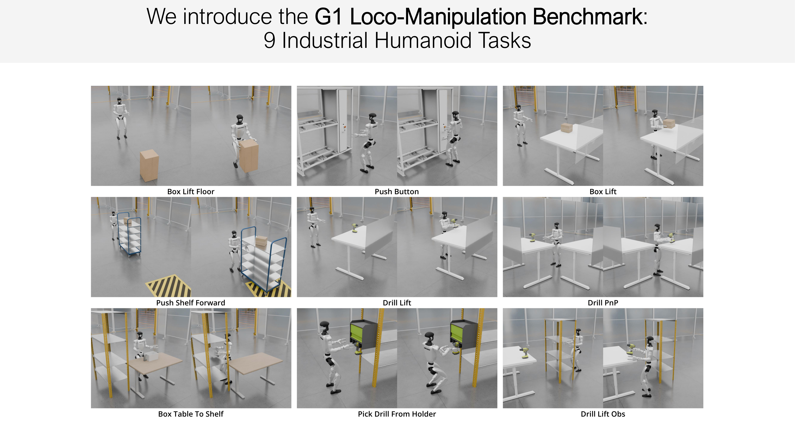
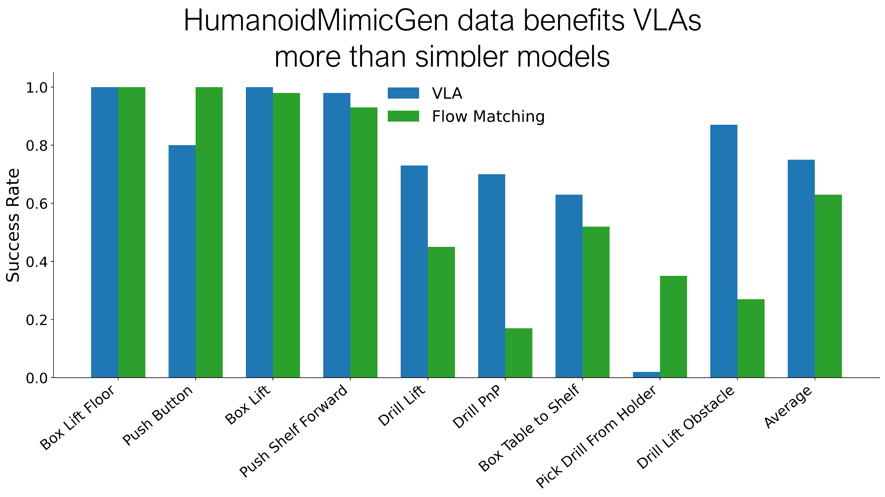

RSS 2026 (Under Review)
Imitation learning is a promising approach for training humanoid robots to simultaneously walk and manipulate, but it requires a large number of demonstrations, which are time-intensive and difficult to collect via teleoperation. Existing data-generation algorithms can automatically synthesize demonstrations for manipulators, but they struggle to directly transfer to humanoids because their high-dimensional composite action spaces involve arms, legs, and torsos.
We present HumanoidMimicGen, an algorithm for generating humanoid legged loco-manipulation data. Our algorithm adapts contact-rich whole-body skills from a handful of source demonstrations to new states, generalizing across changes in object pose. By interleaving these single- and dual-arm skills with whole-body locomotion and manipulation planning, the method generates stable, collision-free data across diverse scenes and layouts.
To evaluate our approach, we developed a new simulated loco-manipulation benchmark. We demonstrate that HumanoidMimicGen automatically generates large datasets for imitation learning and enables a systematic study of how data generation and policy learning decisions impact model performance. We show that a small amount of real-world data along with HumanoidMimicGen data can effectively train capable real-world whole-body visuomotor policies.
HumanoidMimicGen takes a source demonstration with per-arm skill annotations and constraints governing the order of base and arm execution. The skill annotations and constraints determine an execution order and a target end-effector pose for the beginning of each skill.
The Whole-Body Planning process constructs a decoupled locomotion plan and per-arm plan to achieve the targets, executed by the whole-body controller and upper-body controller respectively. We adopt a hybrid action space: the upper body is governed by a joint-space controller, while the lower body is commanded by a reinforcement-learning policy trained to control pelvis velocity.
Finally, the adapted skill segments are executed. This process repeats until all skill segments are complete.
An automated data generation algorithm for humanoids that uses whole-body skill adaptation and planning to synthesize loco-manipulation demonstrations from a few human demonstrations.
A new benchmark suite of 9 simulated G1 humanoid loco-manipulation tasks, enabling reproducible comparison across methods.
Experiments studying the effect of noise types, data-generation algorithms, and model architectures on policy success rates.
Real-world results demonstrating that HumanoidMimicGen data benefits real-world policy performance through co-training.
9 tasks spanning diverse loco-manipulation challenges on the Unitree G1 humanoid

HumanoidMimicGen consistently outperforms baselines across all 9 tasks
| Task | Src Demo | DexMimicGen+ | Ours |
|---|---|---|---|
| Box Lift Floor | 0.14 | 0.87 | 1.00 |
| Push Button | 0.18 | 0.26 | 1.00 |
| Box Lift | 0.95 | 0.68 | 0.98 |
| Push Shelf Forward | 0.70 | 0.35 | 0.93 |
| Drill Lift | 0.20 | 0.13 | 0.45 |
| Drill PnP | 0.08 | 0.13 | 0.17 |
| Box Table To Shelf | 0.04 | 0.17 | 0.52 |
| Pick Drill From Holder | 0.00 | 0.00 | 0.35 |
| Drill Lift Obstacle | 0.04 | 0.00 | 0.27 |
| Average | 0.26 | 0.16 | 0.63 |
Policies trained on 1,000 HumanoidMimicGen demonstrations generated from a single human demonstration per task.

Sim-and-real co-training boosts real-world policy performance
ThrowBottle
BoxToCart
| Task | Real Only | Sim + Real |
|---|---|---|
| ThrowBottle | 0.60 | 0.75 |
| BoxToCart | 0.35 | 0.60 |
| Average | 0.48 | 0.68 |
Co-trained on 500 HumanoidMimicGen simulation demos + 30 real-world demos. Evaluated over 10 episodes.
@inproceedings{humanoidmimicgen2025,
title = {HumanoidMimicGen: Data Generation for Loco-Manipulation
via Whole-Body Planning and Adaptation},
author = {Anonymous},
booktitle = {Robotics: Science and Systems (RSS)},
year = {2026}
}